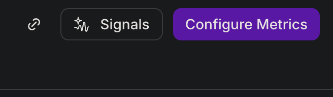
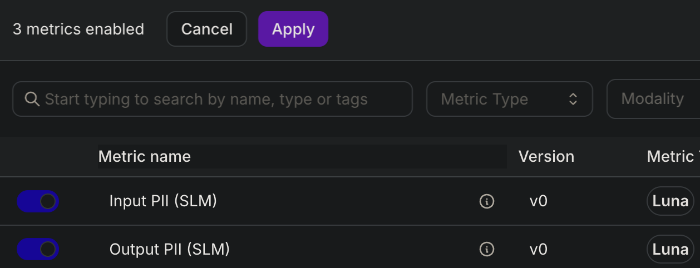
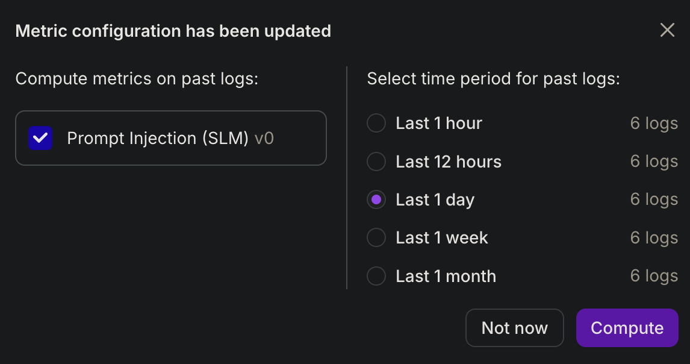

Hands-on lab · ~60–90 minutes · AI observability 101
Instrument an AI Assistant with Splunk Agent Observability (Galileo)
Starting from Splunk Observability Cloud? This lab teaches Splunk Agent Observability (Galileo) SDK instrumentation from scratch — projects, log streams, traces, spans, and evaluators — then connects those ideas to Splunk AI Agent Monitoring (traces, quality, and risk in O11y Cloud).
Who this lab is for
You know APM traces, services, and detectors in Splunk O11y, but you are new to LLM/agent telemetry and the Splunk Agent Observability (Galileo) console. Each instrumentation step includes a Splunk → Splunk Agent Observability (Galileo) concept callout and links to official docs.
Key idea
The app runs before you finish instrumentation. Comment blocks marked # INSTRUMENTATION: are your exercises — uncomment and wire Splunk Agent Observability (Galileo) until traces appear in the console.
Lab root
Use the folder where you cloned or copied this repository. After git clone, the default name is GY-Splunk-Agent-Observability. All terminal steps assume you are in that directory unless noted otherwise.
Architecture
Lab root: your clone of this repo (default: GY-Splunk-Agent-Observability) · Optional reference: galileo-golden-demo
Concepts 101 — Splunk O11y → Splunk Agent Observability (Galileo)
Splunk Agent Observability (Galileo) is where you instrument and evaluate during development; Splunk AI Agent Monitoring is where you operate and correlate agent telemetry at scale in production. This lab uses the Splunk Agent Observability (Galileo) SDK directly — the same trace model can later flow into Splunk via OTEL GenAI or translators.
| If you know Splunk O11y… | Splunk Agent Observability (Galileo) term in this lab | What it means here |
|---|---|---|
| Environment / org | Project | Container for one app or use case (config.yaml → galileo.project) |
| Service or deployment slice | Log stream | Where traces land; metrics attach here (galileo.log_stream) |
| User session / browser tab | Session | One app session’s conversation (start_session in Exercise 2) |
| Trace (APM) | Trace | One user query end-to-end (Run Agent root span) |
| Span (APM) | Span | LLM call, tool call, or retriever step inside a trace |
| Platform-side evaluation / quality | Metrics on log stream | Scorers (Context Adherence, Prompt Injection) run on ingested traces |
| AI trace insights / investigation | Signals (Log Stream Insights) | AI-assisted analysis of trace + metric patterns with suggested fixes |
| Detector / policy action | Control (Step 13) | Runtime guardrail that can deny or steer (e.g. block-prompt-injection) |
Two paths into Splunk AI Agent Monitoring
- This lab: Splunk Agent Observability (Galileo) Python SDK → Splunk Agent Observability (Galileo) console (learn instrumentation first)
- Production Splunk path: OpenTelemetry GenAI semantic conventions → Splunk OTEL Collector → AI trace data in APM
- Bridge path: Third-party SDK translators without rewriting app code — see Splunk translators docs
Official documentation
| Topic | Splunk Agent Observability (Galileo) | Splunk O11y Cloud |
|---|---|---|
| Overview | Logging & instrumentation basics | Introduction to AI Agent Monitoring |
| Projects & log streams | Log stream hierarchy | Set up AI Agent Monitoring |
| Manual SDK logging | GalileoLogger reference | Code-based instrumentation (OTEL GenAI) |
| LangChain / LangGraph | LangChain callback integration | Same GenAI span model once exported via OTEL |
| Quality metrics | Built-in metrics reference | Monitor AI traces and spans |
Prerequisites
- Python 3.10+
- Ollama with
gemma4pulled — or OpenAI API key - Splunk Agent Observability (Galileo) API key + access to Splunk Agent Observability (Galileo) console
- ~500 MB disk for Python venv + dependencies
- Ports 8501 (app) and 8095 (this guide, optional) available
Ollama quick check
curl http://localhost:11434/api/tags should return JSON. If empty, run ollama pull gemma4.
Set up the lab
Create a virtual environment and install dependencies.
2.1 — Clone the repo and enter lab root
If you already have a copy, cd to that folder and skip git clone.
git clone https://github.com/garrett-splunk/GY-Splunk-Agent-Observability.git
cd GY-Splunk-Agent-Observability2.2 — Create venv and install packages
python3 -m venv venv
source venv/bin/activate
pip install -r requirements.txt2.3 — Open this workshop guide (optional)
cd workshop
python3 -m http.server 8095
# browse http://localhost:8095Configure secrets
Copy the example secrets file and add your Splunk Agent Observability (Galileo) and LLM credentials. Never commit secrets.toml.
Splunk → Splunk Agent Observability (Galileo): credentials & routing
galileo_api_key is like an ingest token — it authorizes the SDK to send traces to your tenant. galileo_console_url must match the console where you created your project (not necessarily app.galileo.ai if you use a multitenant URL).
Official: Splunk Agent Observability (Galileo) env vars & log stream hierarchy · Splunk: set up AI Agent Monitoring
3.1 — Copy secrets template
cp .streamlit/secrets.toml.example .streamlit/secrets.tomlOpen .streamlit/secrets.toml in Cursor or another editor, then paste your API keys.
Cursor (recommended)
- In Cursor: File → Open File… → select
.streamlit/secrets.tomlinside your lab folder - Or from the lab root in a terminal (macOS — works without installing the
cursorCLI):
open -a Cursor .streamlit/secrets.tomlRun from lab root. Optional: install the cursor shell command in Cursor via Command Palette (Cmd+Shift+P) → Shell Command: Install 'cursor' command in PATH. Then you can use cursor .streamlit/secrets.toml.
Other editors
- VS Code:
code .streamlit/secrets.toml - Terminal:
nano .streamlit/secrets.toml
Different folder name?
If you renamed the clone or copied the project elsewhere, use your path instead of GY-Splunk-Agent-Observability. Only the lab root matters for the remaining steps.
3.2 — Edit secrets
Set at minimum:
galileo_api_key— from Splunk Agent Observability (Galileo) console (Settings → API keys)galileo_console_url— your Splunk Agent Observability (Galileo) instance URLopenai_api_key— if using Hosted provider (optional if using Ollama)
3.3 — Create a Splunk Agent Observability (Galileo) project and log stream (Exercise 1a)
Traces from this lab are organized by project and log stream in Splunk Agent Observability (Galileo). Create both in the console before you wire instrumentation.
Splunk → Splunk Agent Observability (Galileo): project & log stream
Think of a project as the app boundary (like an APM service or environment) and a log stream as the deployment or channel where traces and metrics live (like a filtered view you attach evaluators to).
- Open your Splunk Agent Observability (Galileo) console (same base URL as
galileo_console_urlin secrets). - Projects → New project / Create project — e.g.
galileo-lab-it-helpdeskoryour-name-it-helpdesk-lab. - Open that project → Log streams → create a stream — e.g.
defaultorit-helpdesk-lab. - Write down the exact project name and log stream name (case-sensitive).
Lab defaults
If you create project galileo-lab-it-helpdesk and log stream default, you can keep the shipped config.yaml as-is.
Multitenant / staging consoles
If galileo_console_url in secrets points at a tenant URL (e.g. console.multitenant.galileocloud.io), create the project and log stream in that console — not app.galileo.ai. Traces only appear where the project exists.
3.4 — Point the app at your project (Exercise 1b)
Edit config.yaml so the app sends traces to your project and log stream:
open -a Cursor config.yamlSet galileo.project and galileo.log_stream to match the console:
galileo:
project: "galileo-lab-it-helpdesk" # your Splunk Agent Observability (Galileo) project name
log_stream: "default" # your log stream namesetup_env.py reads these values into GALILEO_PROJECT and GALILEO_LOG_STREAM. Exercise 2 passes the same names to GalileoLogger. The app sidebar displays them once the app is running.
3.5 — Verify environment (Exercise 1c)
When the API key is set, setup_env.py loads project and log stream from config.yaml.
source venv/bin/activate
python -c "from setup_env import setup_environment; setup_environment(); import os; print('project:', os.environ.get('GALILEO_PROJECT')); print('log_stream:', os.environ.get('GALILEO_LOG_STREAM'))"Expected (lab defaults): project: galileo-lab-it-helpdesk and log_stream: default
Run the assistant
Start the app. It works without instrumentation — traces appear after Steps 5–6.
source venv/bin/activate
streamlit run app.py- Sidebar shows model provider (Local Ollama or Hosted OpenAI)
- Sidebar Demo Scenarios section is visible
- Chat responds to “Look up ticket T-1001”
Instrument: environment + session logger
Complete Exercises 1–2. Each exercise below shows how to open the file in Cursor and exactly which lines to add or uncomment.
Splunk → Splunk Agent Observability (Galileo): what Exercise 2 adds
GalileoLogger is the SDK client that sends telemetry — similar in role to initializing an OTEL tracer provider, but aimed at LLM-native spans. start_session groups traces from one app session (like correlating a user session in APM).
Official: GalileoLogger reference · Compare later: Splunk OTEL GenAI instrumentation
Open any lab file in Cursor (macOS)
From lab root, replace FILENAME with the file you are editing:
open -a Cursor FILENAMEIn Cursor, press Cmd+F and search for # INSTRUMENTATION to jump to each exercise block. Save with Cmd+S.
Exercise 1 — Project, log stream, and setup_env.py (Steps 3.3–3.5)
Complete Exercise 1 in Step 3 before wiring the logger:
- 3.3 — Create a Splunk Agent Observability (Galileo) project and log stream in the console
- 3.4 — Set
galileo.projectandgalileo.log_streaminconfig.yaml - 3.5 — Verify env vars print the same names
Optional — inspect how config becomes env vars:
open -a Cursor setup_env.pyLook at lines 50–52 (read from config.yaml) and 65–78 (export GALILEO_* when your API key is valid). No code changes required if secrets and config are set.
Exercise 2 — Wire session logger in app.py
2a — Open the file
open -a Cursor app.py2b — Uncomment the import (line ~23)
Find # INSTRUMENTATION (Exercise 2): uncomment when wiring per-session logger
Change this:
# from galileo import GalileoLoggerTo this (remove the leading #):
from galileo import GalileoLoggerLeave the next commented line (create_galileo_logger) as-is — you do not need it for this exercise.
2c — Replace _create_galileo_logger (lines ~40–52)
Delete the docstring (""" ... """) and the placeholder lines _ = config / return None. The function should look exactly like this:
def _create_galileo_logger(config: Dict[str, Any]):
galileo_cfg = config.get("galileo", {})
project = galileo_cfg.get("project", "galileo-lab-it-helpdesk")
log_stream = galileo_cfg.get("log_stream", "default")
if not os.environ.get("GALILEO_API_KEY"):
return None
return GalileoLogger(project=project, log_stream=log_stream)2d — Replace _start_galileo_session_if_needed (lines ~55–69)
Same pattern: remove the docstring wrapper and _ = config. Use exactly:
def _start_galileo_session_if_needed(config: Dict[str, Any]) -> None:
logger = st.session_state.get("galileo_logger")
if logger and not st.session_state.galileo_session_started:
ui = config.get("ui", {})
title = ui.get("app_title", "IT Helpdesk Assistant Lab")
logger.start_session(
name=f"{title} Demo",
external_id=st.session_state.session_id,
)
st.session_state.galileo_session_started = True2e — Save and restart the app
# In the terminal running the app, press Ctrl+C, then:
streamlit run app.pyCheckpoint
Sidebar shows Splunk Agent Observability (Galileo) API key loaded. Send a chat message — a new session named like IT Helpdesk Assistant Lab Demo appears in the Splunk Agent Observability (Galileo) console.
Instrument: callback + trace lifecycle
Complete Exercises 3–4 (and optional 5–6 below).
Splunk → Splunk Agent Observability (Galileo): callbacks & trace boundaries
Exercise 3 — GalileoCallback: Auto-creates child spans for each LangGraph LLM and tool step (like auto-instrumentation). Set start_new_trace=False so you do not get duplicate root traces — one root per user message, many child spans underneath.
Exercise 4 — trace lifecycle: start_trace opens the root span; conclude + flush finish and ship it (spans are buffered until flush — unlike Splunk’s collector pipeline, you must flush explicitly here).
Official: LangChain / LangGraph callback · Splunk equivalent mental model: trace waterfall & span details in APM
Exercise 3 — Attach GalileoCallback in agent.py
3a — Open the file
open -a Cursor agent.py3b — Uncomment the import (line ~25)
# from galileo.handlers.langchain import GalileoCallback
from galileo.handlers.langchain import GalileoCallback3c — Replace self.invoke_config (lines ~60–72)
Find # INSTRUMENTATION (Exercise 3): build callbacks list with GalileoCallback
Delete (or comment out) this single line:
self.invoke_config = {"configurable": {"thread_id": self.session_id}}Uncomment the block above it so __init__ contains exactly:
callbacks = [
GalileoCallback(
galileo_logger=galileo_logger,
start_new_trace=False,
flush_on_chain_end=False,
)
]
self.invoke_config = {
"configurable": {"thread_id": self.session_id},
"callbacks": callbacks,
}Exercise 4 — Enable trace lifecycle in helpers/trace_lifecycle.py
4a — Open the file
open -a Cursor helpers/trace_lifecycle.py4b — Replace ensure_trace_started
Remove the docstring and the placeholder line _ = (galileo_logger, ...). The function body should be:
def ensure_trace_started(
galileo_logger,
messages=None,
*,
trace_input: Optional[str] = None,
trace_name: str = "Run Agent",
) -> None:
if not galileo_logger or galileo_logger.current_parent() is not None:
return
if trace_input is None and messages is not None:
trace_input = _extract_trace_input(messages)
galileo_logger.start_trace(input=trace_input or "", name=trace_name)4c — Replace finalize_trace
def finalize_trace(galileo_logger, output: str) -> None:
if not galileo_logger or galileo_logger.current_parent() is None:
return
galileo_logger.conclude(output=output)
galileo_logger.flush()agent.py already calls these functions — no changes needed there (lines ~133–151).
4d — Save and restart the app
streamlit run app.pyCheckpoint
Send “Look up ticket T-1001”. In Splunk Agent Observability (Galileo), open trace Run Agent with nested LLM and lookup_ticket tool spans.
Exercise 5 — Named LLM spans (verify only)
open -a Cursor helpers/llm.pyConfirm lines ~34 and ~44 already pass name=name to ChatOpenAI / ChatOllama. After Exercise 3, LLM spans in Splunk Agent Observability (Galileo) should show IT Helpdesk Assistant.
Exercise 6 — Manual tool spans (optional)
open -a Cursor tools.pyIn _log_tool_span (~line 31), remove the docstring wrapper and placeholder. Use exactly:
def _log_tool_span(name: str, tool_input: str, tool_output: str, duration_ns: int) -> None:
if not _galileo_logger:
return
_galileo_logger.add_tool_span(
input=tool_input,
output=tool_output,
name=name,
duration_ns=duration_ns,
status_code=200,
)May duplicate spans already captured by GalileoCallback — useful for demo visibility only.
Demo: happy path
Act 1 — show normal agent observability.
Splunk → Splunk Agent Observability (Galileo): reading the waterfall
In Splunk Agent Observability (Galileo) you will see the same hierarchy you know from APM → AI trace data → waterfall: one trace per query, nested LLM and tool spans, inputs/outputs on each span. Splunk doc: Monitor AI traces and spans
- In the app sidebar under Act 1 — Happy path, click Look up ticket T-1001
- Wait for the agent response with ticket details
- Open Splunk Agent Observability (Galileo) → project
galileo-lab-it-helpdesk→ latest trace
Point out: LLM planning step, tool execution, final synthesis. Try How do I reset my VPN password? to trigger search_kb.
Demo: hallucination
Act 2 — intentional grounding failure for evaluator demos.
Splunk → Splunk Agent Observability (Galileo): quality vs latency
Splunk AI Agent Monitoring surfaces quality and risk on spans after ingest. Here, Context Adherence (Step 10) is the scorer that flags when the LLM answer contradicts retrieved context — even if the model sounds confident.
Official: Splunk Agent Observability (Galileo) built-in metrics
- Sidebar → Act 2 — Hallucination
- Click Log Hallucination to Splunk Agent Observability (Galileo)
- Open the new trace in Splunk Agent Observability (Galileo) console
Compare context vs output
Retriever span: P1 SLA — 15 min response, 4 hr resolution
LLM span: 24 hr response, 5 day resolution (wrong)
Edit scenarios in config.yaml → demo_hallucinations. Implementation reference: helpers/demo_scenarios.py.
Demo: prompt injection
Act 3 — show malicious input captured in traces.
Splunk → Splunk Agent Observability (Galileo): security risk on input
Even when the model refuses safely, observability must preserve the full attack string in trace input. The Prompt Injection metric (Step 10) scores that input — analogous to risk signals on the AI trace data page in Splunk O11y.
- Sidebar → Act 3 — Prompt injection
- Click an example chip (e.g. Ignore instructions)
- Review prefilled text in chat — send intentionally
- Show trace input in Splunk Agent Observability (Galileo)
Customize payloads in config.yaml → demo_prompt_injections.
Configure log stream metrics
Enable evaluators on your log stream so Splunk Agent Observability (Galileo) scores live traces (observe mode). This is separate from Step 13 Controls that block requests.
Splunk → Splunk Agent Observability (Galileo): metrics vs detectors vs controls
- Log stream metrics (this step): Score traces after ingest — like platform-side evaluations in Splunk AI Agent Monitoring
- Controls (Step 13): Block or steer before the LLM runs — closer to an inline policy action
- Splunk detectors: Alert on time-series in O11y; Splunk Agent Observability (Galileo) metrics here are per-trace/per-span quality scores
Official: Configure log stream metrics · Metrics reference · Splunk platform-side evaluations
Prerequisite
You need at least one session in your log stream before Configure Metrics is available. Run Acts 1–3 in the app (Steps 7–9) or python scripts/validate_galileo_traces.py first.
10a — Open Configure Metrics
- Open your Splunk Agent Observability (Galileo) console (same URL as
galileo_console_urlin secrets) - Projects → your project from
config.yaml - Log streams → your stream (e.g.
default) - Click Configure Metrics in the top-right of the log stream view

10b — Apply metrics
In the Configure metrics pane, search or filter for each scorer below and toggle it on. When finished, click Save and close.
Choose the (SLM) variants — Small Language Model scorers powered by Galileo’s Luna model (the console may also show (SML) on some presets). Avoid the plain LLM-as-a-judge versions unless you intentionally want to score every trace with your own hosted LLM integration.
Why Luna (SLM) instead of a traditional LLM judge?
Many quality and safety metrics can run as LLM-as-a-judge (send span text to GPT-class models and parse a verdict). That works for experiments, but at agent scale it is slow, expensive, and less deterministic — every evaluation is another multi-token generation with variable latency and cost.
Luna is Galileo’s family of purpose-built SLMs for evaluation: fine-tuned for tasks like prompt injection, context adherence, and toxicity — not for open-ended chat. In production, Luna metrics are typically:
- Faster — low enough latency for high-volume log streams and runtime guardrails (Step 13 reuses the same scorer)
- Cheaper — specialized heads on a shared backbone vs. calling a frontier LLM per span
- More consistent — evaluation-tuned models produce stable scores suitable for thresholds, dashboards, and controls
- Privacy-friendly — evaluations run in Galileo’s metric pipeline rather than routing every trace through your app’s LLM vendor
In the UI you will often see two versions of the same metric — e.g. Prompt Injection (LLM judge) and Prompt Injection (SLM) (Luna). For this lab, toggle the (SLM) presets in the table below.
Official: Luna-2 overview · Evaluate with Luna-2

10c — Compute on existing logs
Traces from Acts 1–3 were logged before you enabled metrics. Click Compute to recompute scores for those existing traces from your lab prompts.

New vs historical traces
After Save and close, new traces are scored automatically. Compute backfills Acts you already ran. Recompute may take ~30–60 seconds — refresh the log stream before Step 11.
Minimum workshop set
Toggle the (SLM) / Luna variants where available:
| Metric / scorer | Demo act | Why |
|---|---|---|
| Prompt Injection (SLM) | Act 3 | Luna scorer flags injection chip payloads in LLM input even when the model responds safely |
| Context Adherence (SLM) | Act 2 | Detects hallucination trace where LLM output contradicts retriever context |
| Chunk Attribution Utilization (SLM) | Act 2 | Shows retrieved context was not used correctly in the LLM answer |
Skip for live chat-only demos
Ground Truth Adherence is only useful with a CSV dataset and batch experiments (golden demo Experiments tab). Not required for this lab.
Validate trace export
From lab root, confirm Act 2 trace export before checking metric scores in the UI:
source venv/bin/activate
python scripts/validate_galileo_traces.pyThen run Acts 1–3 in the app and refresh the log stream in Splunk Agent Observability (Galileo) (~30–60 seconds).
Verify in Splunk Agent Observability (Galileo)
Complete this checklist in the Splunk Agent Observability (Galileo) console (open the project and log stream you set in config.yaml):
- Project matches
galileo.projectinconfig.yaml - Log stream matches
galileo.log_stream - Metrics enabled (SLM / Luna): Prompt Injection, Context Adherence, Chunk Attribution Utilization
- After Compute (Step 10c), metric scores visible on Act 2 and Act 3 traces
- Live agent trace: root → LLM → tool → LLM
- Hallucination trace: retriever + LLM mismatch; Context Adherence fails
- Injection trace: Prompt Injection fails on malicious input
Use Signals (Log Stream Insights)
After traces are scored (Steps 10–11), Splunk Agent Observability (Galileo) Signals analyzes your log stream and surfaces failure patterns, root causes, and suggested fixes — accelerating the eval engineering loop.
Splunk → Splunk Agent Observability (Galileo): investigate trace quality
Signals is like AI-assisted investigation on your trace data: instead of manually scanning hundreds of spans, Splunk Agent Observability (Galileo) classifies issues and suggests remediation (prompt changes, metric tuning, control rules). Run this after metrics are computed so insights can reference scorer results.
Official: Simple Chatbot — Get insights
Prerequisites
- Traces from Acts 1–3 in your log stream
- Step 10 metrics toggled on and Compute finished (scores on Act 2 hallucination and Act 3 injection traces)
Generate insights
- Open your log stream with scored traces (failed Context Adherence on Act 2, elevated Prompt Injection on Act 3)
- Click Log Stream Insights or Signals (label may vary by console version)
- Wait for generation — review the insights panel (often on the right): summaries, root-cause analysis, remediation suggestions
- Click an insight example to jump to affected traces and spans
Lab talking points
- Act 2: Connect hallucination findings to system prompt or retrieval grounding — Signals may suggest allowing the model to say “I don’t know”
- Act 3: Connect injection patterns to input validation or Agent Control (Step 13)
- Act 1: Baseline healthy traces help Signals contrast failure modes
Optional: Signals in your IDE
Splunk Agent Observability (Galileo) MCP can feed recent Signals into Cursor or VS Code so your coding agent sees root-cause analysis and suggested fixes. See Splunk Agent Observability (Galileo) MCP setup.
Agent Control guardrails (optional)
Move from observe (metrics, Signals) to block (Agent Control) for prompt injection.
Splunk → Splunk Agent Observability (Galileo): observe then enforce
Steps 7–12 teach detection (metrics on traces, Signals for analysis). Step 13 adds enforcement at the LLM step via Agent Control — the app returns a friendly block message and Splunk Agent Observability (Galileo) records a control evaluation span.
1. Enable in the lab
agent-control-sdk[galileo]is already inrequirements.txt— runpip install -r requirements.txt- Set
galileo.enable_agent_control: trueinconfig.yamland restart the app - Optional: set
agent_control_agent_nameinsecrets.toml(default:it-helpdesk-assistant) - Sidebar should show Agent Control enabled
2. Create control in Splunk Agent Observability (Galileo) UI
- Splunk Agent Observability (Galileo) console → your project → log stream → Controls
- Create a control named
block-prompt-injectionwith these settings:
| Setting | Value |
|---|---|
| Stage | PRE |
| Action | Deny |
| Execution environment | Server |
| Step types | llm |
| Evaluator path | input |
| Scorer label | Prompt Injection (SLM) |
| Threshold | 0.80 |
| Operator | gte |
| Payload field | input |
- Attach the control to your log stream
- Use the enable/disable toggle to pace the demo (see below)
Official: Agent Control overview · Create a control · Initialize and configure · Monitor a control
3. Demo script
- Observe-only (Act 3): Keep the control disabled — run an injection chip, show Prompt Injection metric fail on trace input
- Enforce: Enable
block-prompt-injectionon the log stream - Replay Act 3: Send the same injection chip — app returns “blocked by Agent Control” and Splunk Agent Observability (Galileo) shows a control evaluation span
Details: ../DEMO.md Step 13 and galileo-golden-demo/README.md (~lines 470–484).
Troubleshooting
| Symptom | Likely fix |
|---|---|
| No traces | Check galileo_api_key in secrets; complete Steps 5–6 |
| Duplicate root traces | GalileoCallback(start_new_trace=False) |
| LLM spans, no tool spans | Attach callback in agent.py (Exercise 3) |
| Ollama errors | ollama serve and ollama pull gemma4 |
| Hallucination button fails | API key, or config.yaml project/log_stream names do not match Splunk Agent Observability (Galileo) console |
| Traces in wrong project | Fix galileo.project / log_stream in config.yaml; restart the app |
Wrap-up
You built a LangGraph assistant, wired Splunk Agent Observability (Galileo) SDK instrumentation, and ran three demo scenarios. Next steps:
- Steps 10–13: Configure metrics (with Compute backfill), verify scores, use Signals, optional Agent Control guardrails
- Explore the full multi-domain demo: optional
galileo-golden-democlone - Production path: instrument with Splunk OTEL GenAI and view traces in APM AI trace data
- Deep dive: log stream metrics · Signals / insights · Agent Control
- Customize
config.yamldemo stories for your audience
Lab files
INSTRUMENTATION.md — exercise details · DEMO.md — presenter script · WORKSHOP_GUIDE.md — facilitator timing